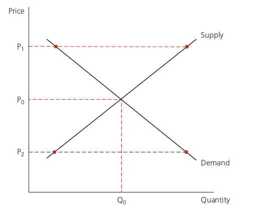
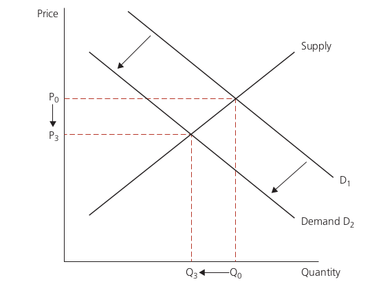
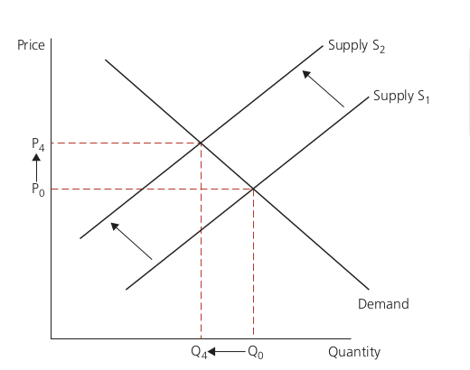
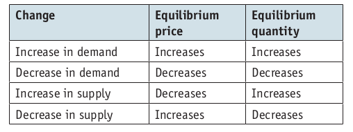
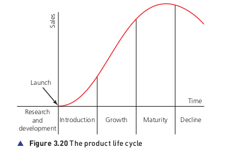
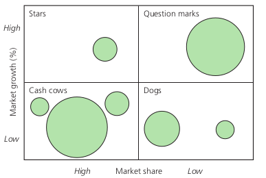

Marketing
The nature of marketing
Marketing is the process of identifying, anticipating and satisfying the needs of customers in a mutually beneficial exchange process.
- Marketing is:
- exchange process: business offers goods and usually gets payment in return.
- mutually beneficial
- aims to identify and anticipate customer needs.
- aims to delight customers
Importance of marketing
-
Marketing is ongoing process since business is dynamic and customers’ needs change over time.
- Effective marketing will increase customer satisfaction, which means the customers:
- are more likely to come back
- are more likely to recommend
- may be more willing to try new products by the business
- may become loyal to product and less likely to switch
- Marketing objectives:
- Sales targets
- Market share
- Brand awareness
Marketing objectives will be linked to the overall objectives of the business. An objective should be quantifiable and include a time element.
- Marketing will discuss and negotiate with operations, finance and human resource departments. By doing this, it influencees what is produced, how many are produced, the range of products offered, and the price at which products are sold.
Demand and supply
Demand refers to how much customers are willing and able to buy at a given price in a given period of time. Supply is the quantity of a particular product that firms are willing and able to sell at a given price in a given period of time.
-
A supply curve shows supply at each and every price and demand curve shows demand at every price with all other factors unchanged.
- Supply will depend on:
- The number of firms producing
- The time period
- Technology
- Costs (including effect of government subsidies, taxes)
- Demand will depend no:
- Income of buyers
- The price of rivals’ products
- The price of complementary products
- marketing activities

- If quantity demanded and supplied is equal and there is no incentive to change, this is known as market equilibrium and the corresponding price and quantity are called equilibrium price and equilibrium quantity.
Effect of change in demand and supply on equilibrium
-
Change in price leads to movement along curves and change in conditions will lead to shift in curve.
-
If demand conditions change and there is a decrease, the quantity demanded at each prive will shift demand inwards. At the old price, there is now excess supply and this leads to fall in the price. As the price decreases, this decreases the quantity businesses will supply and increases the quantity demanded until a new equilibrium is reached.
-
Effect of decrease in demand: 
-
Effect of decrease in supply: 
-
Effects of shift in supply and demand

Markets
Consumer and industrial markets
- In customer markets, the customer buys the product and it is consumed.
-
If a business is selling products directly to the customers who will consume them, this will involve business-to-customer marketing(B2C).
- When you are seelling products to be used in the production proceess for other products, this is known as producer or industrial market. When one business is marketing its products to another business to buy, this is known as business-to-business marketing(B2B).
Local, national and international markets
Customer orientation versus product orientation
-
A customer-oriented(or market led) busineess bases its decisions on customers’ needs. By being customer oriented, a firm should be able to ensure that the product or service it provides matches its customers’ needs.
-
Product-oriented (or product-led) business focuses more…
Marketing Research
Market research involved gathering and analysis of data that is relevant to your marketing.
- The purpose of market research is to understand more about the customers of a business and the main features of the market as whole to make better marketing decisions.
- Main features include:
- size of market
- growth of market
- competitors
Primary Research and Secondary Research
- In primary market research, you have to gatheer new data for a specific purpose.
- Primary research can be railored precisely to your own needs but can be quite expensive and time consuming.
- In primary research you need to make sure that you:
- Don’t lead people into giving you the answers you want
- Choose a representative group of people
- ask enough people enough questions
-
Primary data can be gathered by observation surveys focus group and test marketing
- Secondary market research uses data that already exists. It is paticularly useful for general information on the economy, the market and on competitors.
Sampling
A sample is a group of people that is intended to represent the overall population. The sample should be big enough to be representative of the whole market.
- There are three sampling methods:
- Random sample
- Stratified sample: Based on particular proportion to match target population’s characteristics.
- Quota sample: Based on particular proportion which may or may not reflect the target population
Market research data
-
Qualitative and Quantitative market research are two different approaches to market research.
-
Qualitative research is based on the opinions, values, and beliefs of people.
-
Quantitative research is based on statistical measures and requires relatively large samples.
-
While analysing market research results, a business needs to consider validity and reliability. Also, source, dates, and units need to be paid attention to.
Knowing Pie-chart, line-graph, bar chart is required.
The marketing mix
Marketing mix is the combination of elements that influence a customer’s decision on whether or not to buy a product.
- Elements of marketing mix:
- Price
- Product
- Place
- Promotion
- It can bee extended to feature people(customer service), physical environment, and process.
Products
-
Products are tangible goods whereas services are intangible.
- The tangible attributes of products refer to the physical aspects of product.
-
The intanglible aspects of a product refer to aspects that cannot be touched but can still be important to customers. For example: brand and its key values, guarantee, servicing etc.
- Product differentiation occurs when the benefits of your product are perceived as clearly different from competitors’ product.
Product Portfolio Analysis
Product portfolio analysis occurs when a business examines the position of all of its products in terms of their relative market share and market growth.
Product life cycle
- The product life cycle traces the stages of a product over its life.

-
Managers may use the product life cycle model to identify which stage a product is in at a given moment and then adjust the markeeting mix accordingly.
- A firm may try to prevent the sales of a product going into decline using extension strategies.
- Extenstion strategies include:
- Increasing the usage of product
- Encouraging more frequent use of product
- Reducing price
- Adapting the product
- Introducing promotional sales
- Changing image of product
- Product life cycle model is valuable because it highlights the fact that marketing activities have to be adjusted at different stages in the development of a product.
Boston Matrix
The Boston Matrix is a method of product portfolio analysis that examines the products of a business in terms of their market share and the market growth.

-
Each circle in boston matrix represents one particular product or service. The size of the circle representing turnover of the product.
- The firm’s products can be classified into:
- Cash cows: Products that have high market share but are selling in a slow-growing market. These products can be used to finance other products.
- Question marks (or ‘problem children’): Products that have a small market share of a fast-growing market.These products need protecting and extensive marketing as they usually have uncertain future.
- Stars: Products that have large market share of a rapidly-growing market. Money must be spent to ensure they retain their position.
- Dogs: Products that have low market share in a slow-growing market. A firm may want to get rid of these products unless it thinks it can improve its sales.
- To summarize:
- Dog products may be sold off or production and sales halted.
- Star products maybe invested in to maintain their position.
- Cash cows may be ‘milked’ to provide funds.
- Question marks may be protected.
Pricing Methods
The price of a product can have a major influence on its appeal and whether or not customers think it is good value for money.
Factors determing the price of a product
- The type of product
- The cost of producing a unit
- The ability of customers to pay
- The demand for a product
- The sensitivitty of demand to price changes
- Competitors
- Pricing points
- The objectives of the business
- The stage in the product life cycle
- The rest of market mix
Pricing methods for new products:
- Competive pricing: similar to competitors
- Penetration pricing: low price to enter market
- Price skimming: high price while entering marketing
- Price discrimination: different price for same product
- Dynamic pricing: different price based on demand
- Cost based pricing: Cost + some profit
- Psychological pricing: Psychological effect.
Promotion methods
Promotion refers to the ways in which business communicate about their products.
- Purposes of promotion include:
- Informing customers
- Persuading them
- Reassuring buyers
- Objectives of promotion:
- to increase sales
- to increase the market share
- to position the product relative to competitors in minds of customers
The promotional mix
The promotional mix refers to the combination of ways in which a business can communicate with its customers.
- Its elements are:
- Advertising promotion
- Sales promotion
- Personal selling
- Direct promotion
- The role of branding
- The role of packaging
- Digital promotion
- Choosing the right promotional mix depends on:
- Nature of product
- Marketing expenditure budget
- Available options
Place(channels of distribution)
Distribution of good or service refers to the way in which the ownership of it passes from the producer to the consumer.
Different distribution channels are:
- Zero-level channel: Good or service passes directly from producer to consumer without any intermediaries. For eg. dentists, accountants, and plumbers have zero-level channels.
- One-level channel: There is one intermediary. For example: Retailer buys the product from the manufacturer and sells it to the consumer.
- Two-level channel: There are two intermediaries. For example: a wholesaler buys from manufacturer and sells it to retailers, who sells to the final customers.
The choice of distribution channel depends on Access to markets, desired degree of control, and costs.
The nature of distribution outlet itself can have an impact on the buyihng experience. Distribution outlet is where the product is actually sold.
Internet and marketing
The impact of internet on market research and the marketing mix includes:
- Data: Gather and analyse data in large scale
- Price: Can be adjusted
- Promotion
- Distribution
- Product: Some products can be digital
- People: Communication is easier and faster
- Process: convenient
- Physical evidence: Physical design is less significant.